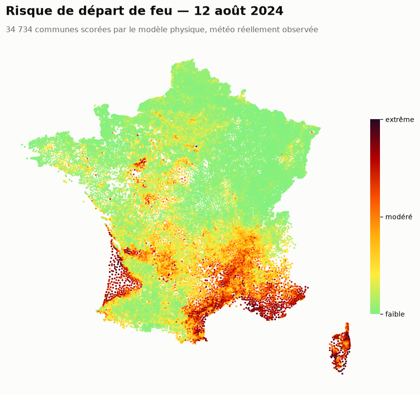
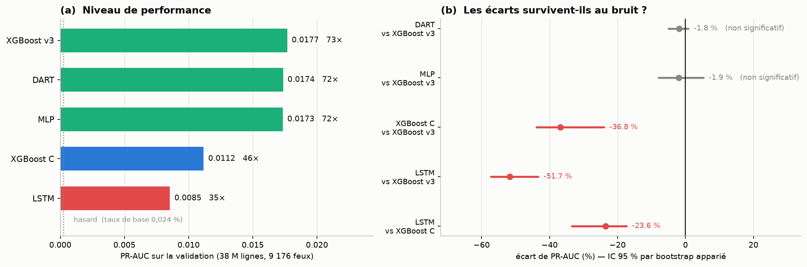
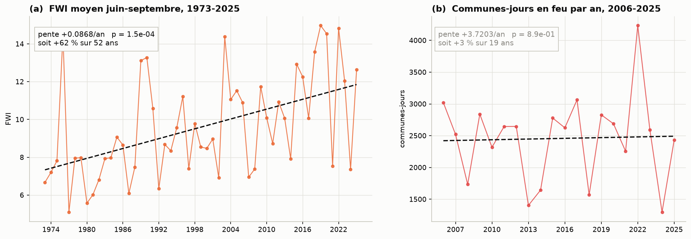
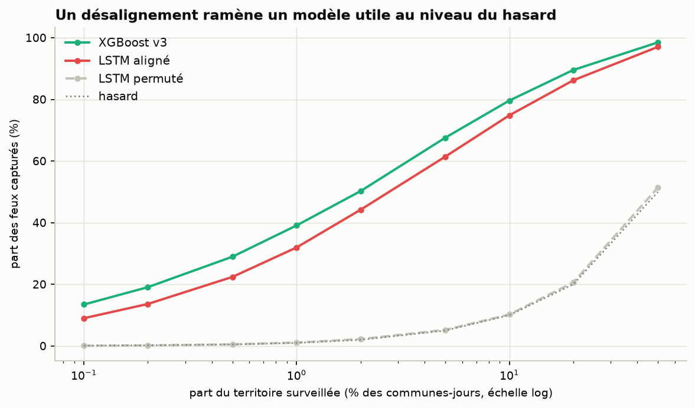

Projet de fin d'année · M1 Data / IA · La Plateforme_
Un modèle qui estime le risque de départ de feu pour chacune des 34 734 communes de France métropolitaine, chaque jour, de 1973 à 2100, et qui rend compte de ses décisions.
L'application s'endort après une période d'inactivité : le premier chargement peut prendre une trentaine de secondes.

Peut-on estimer, à l'échelle du couple commune × jour, la probabilité qu'un départ de feu soit déclaré, à partir des seules données publiques disponibles en temps réel ?
La fin de la phrase est une contrainte, et c'est elle qui a décidé du modèle mis en ligne. Le danger météo existe déjà comme service public, sur une maille de 0,25°, soit environ 28 km. À l'intérieur d'une même maille on trouve en moyenne 31 communes, qui reçoivent le même indice qu'elles soient couvertes de maquis ou bétonnées. La météo dit quand ; elle ne dit pas où.
Un départ de feu concerne 0,019 % des couples commune-jour. À ce niveau, un modèle qui répond toujours « non » obtient 99,98 % de justesse et ne sert à rien.
La ROC-AUC est flatteuse et inutile ici. On mesure la PR-AUC, qui vaut exactement le taux de base quand on répond au hasard. Le rapport des deux donne le lift, qui se lit directement.
À cette rareté, une fuite ne produit pas d'erreur : elle produit d'excellentes métriques et un modèle sans valeur. Une règle explicite la prévient, et des tests la vérifient à chaque commit.
Temporel, jamais aléatoire. Un découpage au hasard mettrait le 14 juillet dans l'entraînement et le 15 dans le test : le modèle « prédirait » un feu déjà vu à 20 km.
Il faut aussi savoir contre quoi l'on se bat. Trois prédicteurs sans aucun apprentissage servent de référence : l'historique de la commune seul vaut déjà ×19,4 le hasard, le danger météo seul ×5,1, et leur croisement ×42,1. C'est la barre à battre, et non le hasard.
Aucun écart n'a été retenu sans intervalle de confiance. Le bootstrap est apparié et rééchantillonne les communes, pas les lignes : les jours d'une même commune ne sont pas indépendants, et 31 communes partagent la même maille météo.
| Modèle | PR-AUC | lift | vs XGBoost v3 |
|---|---|---|---|
| XGBoost v3 | 0,0177 | ×73,4 | référence |
| DART | 0,0174 | ×72,0 | −1,8 % · non significatif |
| MLP | 0,0173 | ×71,9 | −1,9 % · non significatif |
| XGBoost C · physique pure | 0,0112 | ×46,4 | −36,8 % · significatif |
| LSTM · 30 jours de météo | 0,0085 | ×35,4 | −51,7 % · significatif |

XGBoost v3 fait ×93,8 sur le test contre ×63,7 pour le modèle physique. Mais il tire 29 % de son importance de l'historique des feux, et la BDIFF ne publie pas l'année en cours. Pour une prédiction faite aujourd'hui, cette variable ne serait pas imprécise : elle serait fausse. En validation croisée spatiale, sur un territoire retiré de l'entraînement, le modèle physique gagne dans 9 régions sur 9, jusqu'à 137 % de mieux.
L'écart de performance est d'ailleurs moins coûteux qu'il n'en a l'air. En surveillant 1 % des communes-jours, le modèle déployé couvre 42 % des départs, et les 37 % de PR-AUC qui séparent les deux modèles ne valent que trois points de rappel à ce budget, et plus rien du tout à 10 %.
25 essais Optuna, arrêt précoce, et il perd de
23,6 % [−33,5 ;
−17,3] contre le modèle physique, à information égale. La
raison est physique : les indices DC, DMC et
BUI sont déjà des états récursifs, des moyennes
exponentielles de la météo passée à 52 et 15 jours de constante de
temps. Le CEMS livre l'état caché que le LSTM devrait réapprendre sur
9 176 exemples positifs.
Deux méthodes indépendantes disent la même chose. La PACF des résidus tombe de 0,70 au premier retard à 0,08 au troisième : la mémoire utile de la série est de deux à trois jours. Et un ARIMA sans variable exogène donne une corrélation négative, alors qu'ajouter le FWI fait tomber l'erreur de 37 %.

| Série | Période | Variation | Verdict |
|---|---|---|---|
| FWI moyen juin-septembre | 1973-2025 | +62 % | significatif |
| Jours de danger élevé | 1973-2025 | +197 % | significatif |
| Communes-jours en feu | 2006-2025 | +3 % | non significatif |
Ne montrer que la première ligne donnerait une fausse impression. L'énoncé exact est que les conditions favorables aux feux augmentent très significativement, et que le nombre de départs reste stable sur les 20 années disponibles. Trois lectures restent possibles, et les données du projet ne permettent pas de trancher entre elles. C'est aussi pourquoi les projections à 2100 transportent l'aléa météo, jamais le bilan.
Le premier verdict du LSTM annonçait −97 %. Le vrai est −51,7 %.
La requête d'assemblage n'a pas d'ORDER BY : l'ordre des
38 millions de lignes que renvoie PostgreSQL dépend du plan d'exécution
et change d'une exécution à l'autre. Les fichiers de prédictions ne
portaient que (score, cible), si bien que les comparer
revenait à les aligner par position. Même taille, même nombre de feux,
ordre différent, et rien ne signale l'erreur.

Sur un événement à 0,02 %, une erreur de plomberie ne se manifeste jamais par une exception. Elle se manifeste par un chiffre plausible. Les seules défenses sont les invariants explicites et les assertions qui échouent bruyamment. Tout fichier de prédictions porte désormais ses clés, et un test refuse ceux qui n'en ont pas.
PostgreSQL 16 + PostGIS Docker XGBoost PyTorch Optuna SHAP · LIME · DiCE statsmodels Streamlit pytest GitHub Actions DVC
CEMS/Copernicus (21,9 M lignes de météo), BDIFF (les feux déclarés), CORINE Land Cover et le référentiel INSEE, croisés sur le code commune et une grille météo de 0,25°.
Une grille dense commune × jour de 253,7 M lignes, partitionnée par année. Dense et non creuse : sans les jours sans feu, les fenêtres glissantes seraient silencieusement fausses.
TreeSHAP, exact sur un modèle d'arbres, LIME pour la comparaison, et DiCE pour le contrefactuel, la seule des trois questions dont la réponse se traduise en décision.